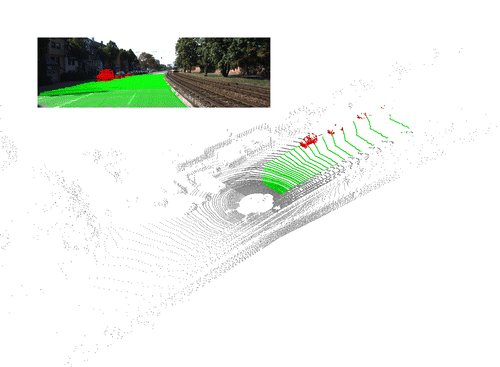
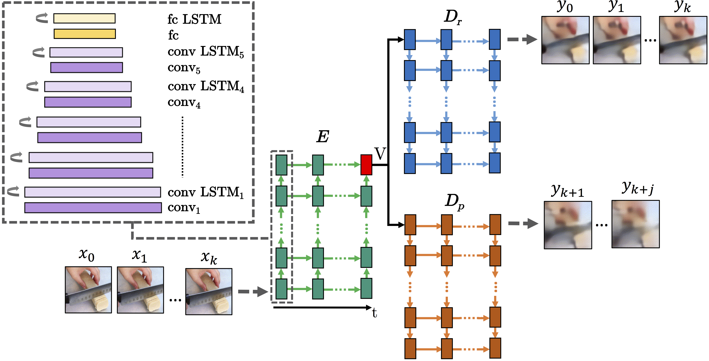

|
Eren Erdal Aksoy
|
News
Publications
You can see all my publications on Google Scholar and ResearchGate.

SalsaNet: Fast Road and Vehicle Segmentation in LiDAR Point Clouds for Autonomous Driving
Eren Erdal Aksoy, Saimir Baci, and Selcuk Cavdar
In arxiv 2019
Materials:
PDF, Code, Video

Deep Episodic Memory for Robot Action Execution
Jonas Rothfuss, Fabio Ferreira, Eren Erdal Aksoy, You Zhou, and Tamim Asfour
In IEEE Robotics and Automation Letters (RA-L) 2018
Materials:
PDF, Code, Project